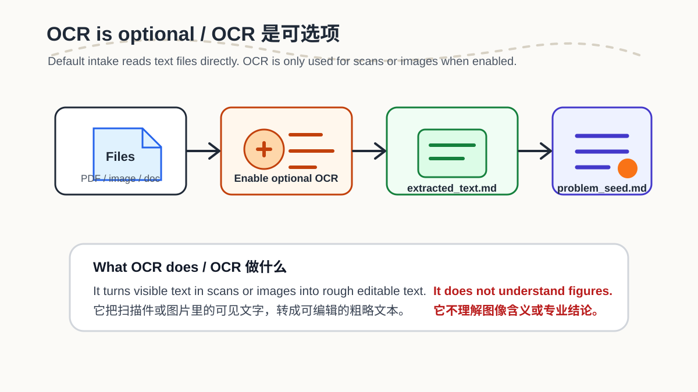
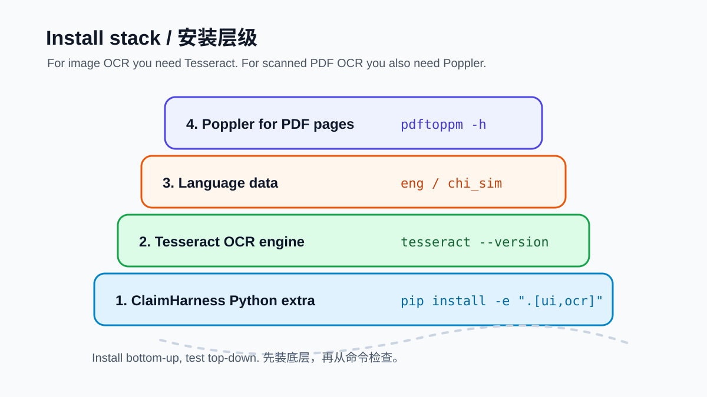
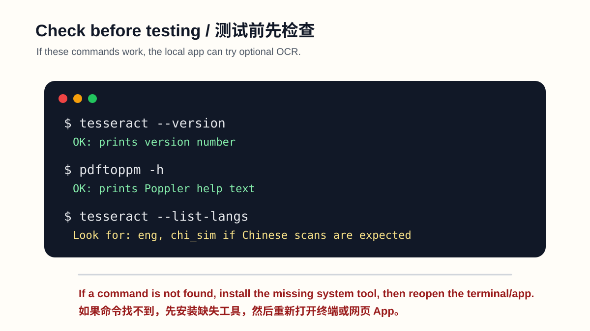

Windows
安装 UB-Mannheim 的 Tesseract Windows installer，并尽量使用默认路径：
C:\Program Files\Tesseract-OCR扫描版 PDF 还需要 Poppler，并把 Poppler 的 bin 目录加入 PATH。
OCR 是可选项。默认情况下，ProblemBridge / ClaimHarness 不需要 OCR。只有当你要读取扫描版 PDF 或图片文字时，才需要安装这一组工具。
Local only No API key Optional dependency Scans and images
在仓库根目录运行：
pip install -e ".[ui,ocr]"这会安装 pytesseract、pdf2image 和 Pillow。这些只是 Python 包，还需要系统工具。

安装 UB-Mannheim 的 Tesseract Windows installer，并尽量使用默认路径：
C:\Program Files\Tesseract-OCR扫描版 PDF 还需要 Poppler，并把 Poppler 的 bin 目录加入 PATH。
如果已经安装 Homebrew：
brew install tesseract popplersudo apt update
sudo apt install tesseract-ocr poppler-utils
sudo apt install tesseract-ocr-chi-sim如果要识别中文扫描件，需要 chi_sim 语言数据。否则中文可能乱码、漏字或识别成英文字符。
tesseract --list-langs列表里至少应看到 eng。如果要识别简体中文，还要看到 chi_sim。

tesseract --version
pdftoppm -h
tesseract --list-langs如果 tesseract 或 pdftoppm 显示“not recognized / command not found”，说明系统工具还没装好，或没有加入 PATH。
streamlit run apps/problem_bridge_wizard.py。| 现象 | 原因 | 处理 |
|---|---|---|
找不到 tesseract | Tesseract 未安装或不在 PATH | 安装 Tesseract，重新打开终端或 App |
找不到 pdftoppm | Poppler 未安装或不在 PATH | 安装 Poppler，并把 bin 加入 PATH |
| 中文识别很差 | 缺少 chi_sim | 安装简体中文语言数据 |
| OCR 文本很乱 | 扫描质量或版式复杂 | 换更清晰扫描件，或把 OCR 当作粗略输入 |